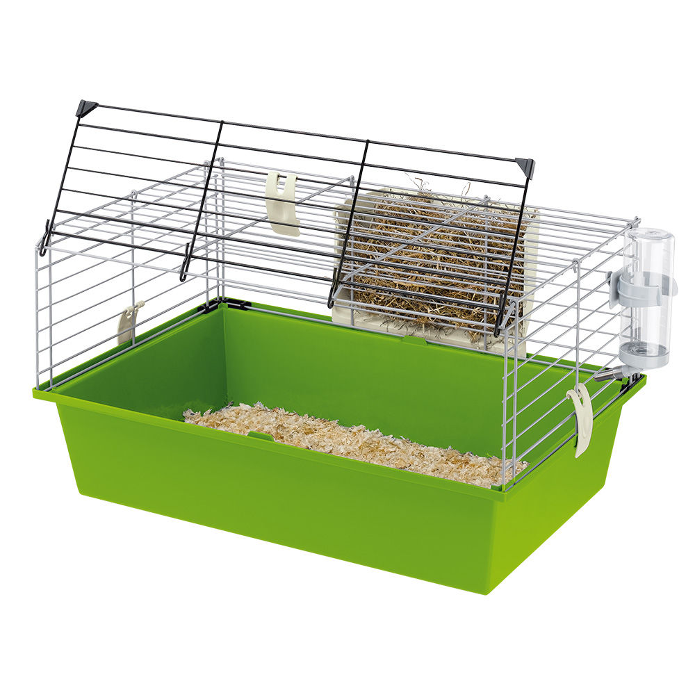

ЗООМАГАЗИН
НАШИ ТОВАРЫ
| # | название | цена | колличество | производитель |
|---|---|---|---|---|
| 1 | кошачий корм | 100 рублей | 10 шт. | Китай |
| 2 | собачий корм | 120 рублей | 10 шт. | Россия |
| 3 | клетка для попугая | 1000 рублей | 1 шт. | Китай |
| 4 | мячик | 150 рублей | 1 шт. | Россия |
АКЦИИ
Товар выходного дня Wellness Core паучи и консервы.
 Пауч и консервы ТМ Wellness Core в период акции по вторникам, средам, четвергам – по 20 руб. Ассортимент акционных кормов: - Велнес CORE конс/кошек Signature Selects, измельченное куриное филе с идейкой с соусе, 79г - Велнес CORE конс/кошек Signature Selects,измельченное курин.филе с курин.печенью в соусе,79г - Велнес CORE конс/кошек Signature Selects,аппетитные кусочки говядины и курин.филе в соусе,79г - Велнес CORE конс/кошек Signature Selects,аппетитные кусочки курин.филе и индейки в соусе,79г - Велнес CORE конс/кошек Signature Selects, рубленный тунец с лососем в бульоне, 79г - Велнес CORE конс/кошек Signature Selects, рубленный тунец с креветками в бульоне, 79г - Велнес CORE пауч/кошек Tender Cuts, нежные кусочки курицы и лосося в пикантном соусе, 85г - Велнес CORE пауч/кошек Tender Cuts,нежные кусочки курицы и курин.печени в пикантном соусе,85г - Велнес CORE пауч/кошек Tender Cuts, нежные кусочки тунца в пикантном соусе, 85г - Велнес CORE пауч/кошек Tender Cuts, нежные кусочки лосося и тунца в пикантном соусе, 85г - Велнес CORE пауч/кошек Tender Cuts, нежные кусочки индейки и утки в пикантном соусе, 85г - Велнес CORE пауч/кошек Tender Cuts, нежные кусочки курицы и индейки в пикантном соусе, 85г - Велнес CORE конс/собак мел.пор., попурри из кур. и утки, запечен. с горошком и морковью,85г - Велнес CORE конс/собак мел.пор.,попурри из курин.филе с индейкой,морковью и зел.фасолью,85г - Велнес CORE конс/собак мел.пор,попурри из кур. и говядины,запечен.с зел.фас.и красн.перц,85г - Велнес CORE конс/собак мел.пор,попурри из баран.и оленины,тушен.с бел.слад.карт. и морк.,85г
Пауч и консервы ТМ Wellness Core в период акции по вторникам, средам, четвергам – по 20 руб. Ассортимент акционных кормов: - Велнес CORE конс/кошек Signature Selects, измельченное куриное филе с идейкой с соусе, 79г - Велнес CORE конс/кошек Signature Selects,измельченное курин.филе с курин.печенью в соусе,79г - Велнес CORE конс/кошек Signature Selects,аппетитные кусочки говядины и курин.филе в соусе,79г - Велнес CORE конс/кошек Signature Selects,аппетитные кусочки курин.филе и индейки в соусе,79г - Велнес CORE конс/кошек Signature Selects, рубленный тунец с лососем в бульоне, 79г - Велнес CORE конс/кошек Signature Selects, рубленный тунец с креветками в бульоне, 79г - Велнес CORE пауч/кошек Tender Cuts, нежные кусочки курицы и лосося в пикантном соусе, 85г - Велнес CORE пауч/кошек Tender Cuts,нежные кусочки курицы и курин.печени в пикантном соусе,85г - Велнес CORE пауч/кошек Tender Cuts, нежные кусочки тунца в пикантном соусе, 85г - Велнес CORE пауч/кошек Tender Cuts, нежные кусочки лосося и тунца в пикантном соусе, 85г - Велнес CORE пауч/кошек Tender Cuts, нежные кусочки индейки и утки в пикантном соусе, 85г - Велнес CORE пауч/кошек Tender Cuts, нежные кусочки курицы и индейки в пикантном соусе, 85г - Велнес CORE конс/собак мел.пор., попурри из кур. и утки, запечен. с горошком и морковью,85г - Велнес CORE конс/собак мел.пор.,попурри из курин.филе с индейкой,морковью и зел.фасолью,85г - Велнес CORE конс/собак мел.пор,попурри из кур. и говядины,запечен.с зел.фас.и красн.перц,85г - Велнес CORE конс/собак мел.пор,попурри из баран.и оленины,тушен.с бел.слад.карт. и морк.,85г
Скидка 30% на продукцию "Ферпласт"
 Скидка 30% на товары "Ферпласт" в ассортименте: Аквариум DUBAI 80 бежевый 125л Ферпласт, шт Грот Звезда морская большая BLU9160 Ферпласт, шт Губка BLUCLEAR карбоновая в фильтр 03 Ферпласт, шт Губка BLUCLEAR карбоновая в фильтр 05 Ферпласт, шт Губка BLUCLEAR карбоновая в фильтр 09 Ферпласт, шт Губка BLUMEC в фильтр BluWave 03 Ферпласт, шт Губка BLUMEC в фильтр BluWave 07 Ферпласт, шт Губка BLUMEC в фильтр BluWave 09 Ферпласт, шт Дом ALVEO Large мягк.для кошек Ферпласт, шт Дом ALVEO Medium мягк.для кошек Ферпласт, шт Дом ALVEO Small мягк.для кошек Ферпласт, шт Дом ALVEO 40 CUSCINO для кошек сердечки и цветы Ферпласт, шт Дом TUNNEL мягк.для кошек Ферпласт, шт Дом-юрта TIPI Medium мягк.для кошек Ферпласт, шт Домик SIN 4649 д/морских свинок Ферпласт*2шт, шт Домик SIN 4650 д/кроликов Ферпласт, шт Запасная подушка для лежака SOFA 2 синяя Ферпласт, шт Карбоновая губка BLUCLEAR в фильтр BluWave 07 Ферпласт, шт Клетка CRICETI 60 GREENSUN ЭКО Ферпласт, шт Клетка DIVA золото д/птиц Ферпласт, шт Клетка JENNY д/крыс хром Ферпласт, шт Клетка MARY д/крыс (хром) Ферпласт, шт Клетка PAGODA P д/птиц (белая) Ферпласт, шт Клетка PAGODA P д/птиц (золото) Ферпласт, шт Клетка-террариум RATATOUT 60 Ферпласт, шт Контейнер ATLAS 20 VISION открытый Ферпласт, шт Лежак SIESTA DELUXE 6 для собак бордовый Ферпласт, шт Лежак SIESTA DELUXE 6 для собак серебро Ферпласт, шт Лежак SIESTA DELUXE 8 для собак бордовый Ферпласт, шт Лежак SIESTA DELUXE 8 для собак коричневый Ферпласт, шт Лежак SIESTA DELUXE 8 для собак серебристый Ферпласт, шт Лежак-софа DANDY 65 COTONE для кошек и собак Ферпласт, шт Магнит BLU9031 нетонущ.мал. для пластик.поверх. Ферпласт, шт Магнит BLU9036 нетонущ.маленький Ферпласт, шт Магнит BLU9039 нетонущий большой Ферпласт, шт Миска PARTY 10 2л Ферпласт*6, шт Миска PARTY 12 3л Ферпласт*6, шт Миска керамич 1089 д/кроликов Ферпласт, шт Миска керамич RIGEL Ферпласт, шт Миска мет. MIRA 80 1,95л Ферпласт*3, шт Миска мет. MIRA KC 70 черная 0,25л Ферпласт*3, шт Миска мет. MIRA KC 76 белая 0,9л Ферпласт*3, шт Миска мет. MIRA KC 76 черная 0,9л Ферпласт*3, шт Миска мет. MIRA KC 78 черная 1,5л Ферпласт*3, шт Миска мет. MIRA KC 80 белая 2,5л Ферпласт*3, шт Миска мет. MIRA KC 80 черная 2,5л Ферпласт*3, шт Миска мет. SUPERNOVA 180 Ферпласт*6, шт Миска мет. SUPERNOVA 280 Ферпласт*6, шт Миска складная РА 1086 1л для путешествий Ферпласт, шт Модуль для фильтра BLUMODULAR Ферпласт, шт Мяч для лакомств д/кошек 5216 Ферпласт, шт Набор щеток GRO5998 для мелких животных Ферпласт, шт Нагреватель BLUCLIMA 100W Ферпласт, шт Нагреватель BLUCLIMA 150W Ферпласт, шт Нагреватель BLUCLIMA 50W Ферпласт, шт Нагреватель BLUCLIMA 75W Ферпласт, шт Намордник SAFE BOXER ( боксер,борд.дог) Ферпласт, шт Намордник SAFE Extra Large ( ротвейлер сенберн) Ферпласт, шт Намордник SAFE Large ( з.ретривер)) Ферпласт*3, шт Намордник SAFE Medium ( доберман,хаски) Ферпласт*3, шт Намордник SAFE Small ( анг.коккер,цверг) Ферпласт, шт Намордник SAFE мини мягкий /чи-хуа-хуа, пудель Ферпласт, шт Наполнитель для фильтра BLURINGS керамика 500г Ферпласт, шт Наполнитель для фильтра BLUZEOLITE Ферпласт, шт Ножницы GRO 5997 Ферпласт, шт Ошейник CLUB C 15/44 с пласт.крепл. красн шотладка Ферпласт, шт Ошейник CLUB C20/56 COLOURS COL белый Ферпласт, шт Ошейник CLUB C25/70 COLOURS COL белый Ферпласт, шт Ошейник CLUB C25/70 COLOURS COL зеленый Ферпласт, шт Ошейник CLUB C25/70 COLOURS COL фиолетовый Ферпласт, шт Ошейник CLUB CF 20/43 черный Ферпласт, шт Ошейник CLUB CF 25/45 синий Ферпласт, шт Ошейник CLUB CF 25/45 черный Ферпласт, шт Ошейник CLUB CF 25/53 синий Ферпласт, шт Ошейник CLUB CF 25/53 черный Ферпласт, шт Ошейник DAYTONA C 15/35 черный Ферпласт, шт Ошейник DAYTONA C 20/43 черный Ферпласт, шт Ошейник DAYTONA C 25/45 красный Ферпласт, шт Ошейник DAYTONA C 40/69 красный Ферпласт, шт Ошейник DAYTONA C 40/69 синий Ферпласт, шт Поводок DUAL C15/110 COLOU GUIN зеленый Ферпласт, шт Поводок DUAL C25/110 COLOU GUIN оранжевый Ферпласт, шт Поводок CLUB G20/120 COLOU. GUINZ зеленый Ферпласт, шт Поводок CLUB G20/120 COLOU. GUINZ фиолетовый Ферпласт, шт Поводок CLUB G25/120 COLOU. GUINZ зеленый Ферпласт, шт Поводок CLUB G25/120 COLOU. GUINZ фиолетовый Ферпласт, шт Поводок DAYTONA GА 20/200 черный Ферпласт, шт Поводок ERGOFLUO MATIC G20/120 оранжевый, шт Поводок ERGOFLUO MATIC G25/120 голубой, шт Поводок ERGOFLUO MATIC G25/120 оранжевый, шт Поводок MODA G20/100 голубой кожа Ферпласт, шт Поводок-перестежка CLUB GА 20/200 синий Ферпласт, шт Подстилка Nanna 85 Ферпласт, шт Подушка POLO 110 коричневая со съемным непромокаемым чехлом Ферпласт, шт Подушка POLO 80 коричневая со съемным непромокаемым чехлом Ферпласт, шт Подушка POLO 95 коричневая со съемным непромокаемым чехлом Ферпласт, шт Подушка RELAX C 65 для собак и кошек Ферпласт, шт Подушка RELAX С 78 для собак и кошек Ферпласт, шт Подушка VENUS 78/8 для кошек/собак зеленая Ферпласт, шт Подушка запасная для лежака SOFA 8 вариант 2 Ферпласт, шт Подушка запасная для лежака SOFA-10 вариант 1 без меха Ферпласт, шт Подушка запасная для лежака SOFA-6 вариант 1 Ферпласт, шт Подушка запасная для лежака SOFA-6 вариант 3 Ферпласт, шт Подушка запасная для лежака SOFA-8 вариант 1 Ферпласт, шт Расческа GRO5941 двухстороння резиновая Ферпласт, шт Рулетка AMIGO LARGE красно-белая (шнур) со сменной крышкой Ферпласт, шт Рулетка AMIGO MEDIUM бело-зеленая (шнур) со сменной крышкой Ферпласт, шт Рулетка AMIGO SMALL фукция (шнур) со сменной крышкой Ферпласт , шт Совок гиг. FPI5352 Ферпласт, шт Софа DANDY 45 для собак и кошек Ферпласт, шт Софа DANDY 55 для собак и кошек Ферпласт, шт Софа DANDY 65 для собак и кошек Ферпласт, шт Софа DANDY 80 для собак и кошек Ферпласт, шт Софа DANDY 95 для собак и кошек Ферпласт, шт Софа DANDY F80 для собак и кошек Ферпласт, шт Софа MAJESTIC 65 иск кожа коричневая со съемн чехлом Ферпласт, шт Софа MAJESTIC 65 иск кожа красная со съемн чехлом Ферпласт, шт Софа MAJESTIC 75 иск кожа красная со съемн чехлом Ферпласт, шт Софа NIDO 80 бордовая Ферпласт, шт Тумба под аквариум DUBAI 80 бежевая Ферпласт, шт Фильтр BLUCOMPACT 01 до 45л Ферпласт, шт Фильтр BLUCOMPACT 02 45-75л Ферпласт, шт Чехол защ. д/лампы точеч. нагрева черный Ферпласт, шт Шлейка AGILA ERGOFLUO 3 розовая, шт Шлейка AGILA ERGOFLUO 4 розовая, шт Шлейка EASY COLOURS P LARGE зеленая Ферпласт, шт Шлейка EASY COLOURS P LARGE фиолетовая Ферпласт, шт Шлейка EASY Large для собак синяя Ферпласт, шт Шлейка EASY MEDIUM для собак оранжевый Ферпласт, шт Шлейка EASY Р LARGE для собак розовая Ферпласт, шт Шлейка EASY Р MEDIUM для собак Ферпласт, шт Шлейка SPORT DOG P LARGE желтая Ферпласт, шт Шлейка SPORT DOG P M голубая Ферпласт, шт Шлейка SPORT DOG P M фуксия Ферпласт, шт Шлейка SPORT DOG P SMALL серая Ферпласт, шт Шлейка SPORT DOG P XS желтая Ферпласт, шт Шлейка SPORT DOG P XS фуксия Ферпласт, шт Щетка 5904 овальная Ферпласт, шт Щетка 5955 самоочищающаяся средняя Ферпласт, шт Яйца-муляжи 4464 4 шт Ферпласт, шт
Скидка 20% на паучи Perfect Fit
 Скидка 25% на паучи Whiskas рагу в ассортименте: - Вискас вл 85г рагу кролик/индейка*24 - Вискас вл 85г рагу курица*24 - Вискас вл 85г рагу гов/ягненок*24 - Вискас вл 85г рагу с индейкой*24 - Вискас вл 85г рагу с лососем*24 - Вискас вл 85г рагу с телятиной*24 - Вискас вл 85г рагу с форелью*24
Скидка 25% на паучи Whiskas рагу в ассортименте: - Вискас вл 85г рагу кролик/индейка*24 - Вискас вл 85г рагу курица*24 - Вискас вл 85г рагу гов/ягненок*24 - Вискас вл 85г рагу с индейкой*24 - Вискас вл 85г рагу с лососем*24 - Вискас вл 85г рагу с телятиной*24 - Вискас вл 85г рагу с форелью*24
Акция на сухой корм Brit Care для собак
 Скидка 15% на сухие корма Brit Care 1 кг/3 кг в ассортименте: - Adult Large Breed д/взр. собак круп.пород ягненок/рис 1 кг - Adult Medium Breed д/взр. собак сред.пород ягненок/рис 1 кг - Adult Small Breed д/взр. собак мелких пород ягненок/рис 1 кг - Junior Large Breed д/щенков круп.пород ягненок/рис 1 кг - Puppy All Breed д/щенков всех пород ягненок/рис 1 кг - Salmon/potato Adult Large Breed д/взр. собак круп.пород беззерновой 1 кг - Salmon/potato Junior Large Breed д/.юниоров круп.пород беззерновой 1 кг - Salmon/potato Puppy для щенков беззерновой лосось/картофель 1 кг - Salmon/potato Adult д/взр. собак мелких и средних пород беззерновой лосось/картофель 1 кг - Adult Large Breed д/взр. собак круп.пород ягненок/рис 3 кг - Adult Medium Breed д/взр. собак сред.пород ягненок/рис 3 кг - Adult Small Breed д/взр. собак мелких пород ягненок/рис 3 кг - Junior Large Breed д/щенков круп.пород ягненок/рис 3 кг - Endurance для активных собак всех пород утка/рис 3 кг - Puppy All Breed д/щенков всех пород ягненок/рис 3 кг - Salmon/potato Adult Giant Breed д/взр. собак гигант.пород беззерновой лосось/картофель 3 кг - Salmon/potato Junior Large Breed д/юниоров круп.пород беззерновой лосось/картофель 3 кг - Salmon/potato Junior Large Breed д/.юниоров круп.пород беззерновой 1 кг - Salmon/potato Puppy для щенков беззерновой лосось/картофель 3 кг - Salmon/potato all breed беззерновой для собак всех пород лосось/картофель 3 кг - Senior All Breed для собак старше 7 лет ягненок/рис 3 кг - Weight Loss для собак, склонных к полноте, кролик/рис 3 кг.
Скидка 15% на сухие корма Brit Care 1 кг/3 кг в ассортименте: - Adult Large Breed д/взр. собак круп.пород ягненок/рис 1 кг - Adult Medium Breed д/взр. собак сред.пород ягненок/рис 1 кг - Adult Small Breed д/взр. собак мелких пород ягненок/рис 1 кг - Junior Large Breed д/щенков круп.пород ягненок/рис 1 кг - Puppy All Breed д/щенков всех пород ягненок/рис 1 кг - Salmon/potato Adult Large Breed д/взр. собак круп.пород беззерновой 1 кг - Salmon/potato Junior Large Breed д/.юниоров круп.пород беззерновой 1 кг - Salmon/potato Puppy для щенков беззерновой лосось/картофель 1 кг - Salmon/potato Adult д/взр. собак мелких и средних пород беззерновой лосось/картофель 1 кг - Adult Large Breed д/взр. собак круп.пород ягненок/рис 3 кг - Adult Medium Breed д/взр. собак сред.пород ягненок/рис 3 кг - Adult Small Breed д/взр. собак мелких пород ягненок/рис 3 кг - Junior Large Breed д/щенков круп.пород ягненок/рис 3 кг - Endurance для активных собак всех пород утка/рис 3 кг - Puppy All Breed д/щенков всех пород ягненок/рис 3 кг - Salmon/potato Adult Giant Breed д/взр. собак гигант.пород беззерновой лосось/картофель 3 кг - Salmon/potato Junior Large Breed д/юниоров круп.пород беззерновой лосось/картофель 3 кг - Salmon/potato Junior Large Breed д/.юниоров круп.пород беззерновой 1 кг - Salmon/potato Puppy для щенков беззерновой лосось/картофель 3 кг - Salmon/potato all breed беззерновой для собак всех пород лосось/картофель 3 кг - Senior All Breed для собак старше 7 лет ягненок/рис 3 кг - Weight Loss для собак, склонных к полноте, кролик/рис 3 кг.
Скидка 15% на сухой корм Hill's
Скидка 15% на сухие корма Hill's в ассортименте: - 14600 д/кошек кур 400г - 14677 д/кошек кролик 400г - 20392 д/кошек ягн 400г - 14597 д/кошек тунец 400г - 734321 д/кошек деликат 400г - 734190 д/кошек деликат 1,5кг - 733343 д/кошек деликат 5кг - 13629 д/котят кур 2кг - 65034 д/щенков декор 1,5кг., - 15377 д/котят тунец 2кг - 12776 д/щенков мини кур 3кг - 12774 д/щенков ягн/рис 3кг - 48148 д/щенков ягн/рис 12 кг - 04030 д/котят кур 10 кг
ИНТЕРНЕТ-МАГАЗИН ЗООТОВАРОВ
Домашние животные, которые бок о бок проживают в современных квартирах со своими хозяевами, тоже имеют свои потребности. Поэтому торговля товарами для животных приобретает сейчас широкий размах. Особой популярностью у покупателей пользуются интернет магазины, обладающие несомненными преимуществами по сравнению с обычными магазинами. Во первых, онлайн ресурс может предложить покупателю более широкий ассортимент товаров. Это достигается за счет экономии на аренде торговых площадей. Интернет магазину не нужна развернутая сеть торговых площадей, которые требуют крупных финансовых вложений. Ему вполне достаточно одного склада где-нибудь на окраине города. Во вторых, товары в интернет магазине обладают отличным качеством и низкими ценами. Виртуальные магазины формируют низкую стоимость товаров за счет той же экономии на торговых площадях. В третьих, совершать покупки в интернет магазине очень удобно и приятно. При посещении обычной торговой точки показателей проследуют специфические запахи, они могут столкнутся с грубостью продавцов и длинными очередями в кассу. Виртуальный зоомагазин лишен всех этих неприятных моментов. Покупателю не придется выходить из дома для того, чтобы совершить покупку.
ТОВАРЫ ДЛЯ ЖИВОТНЫХ
Домашнее животное полностью зависит от своего хозяина, в ответ на любовь и ласку оно требует внимания и ухода. У домашних любимцев имеются свои потребности, которые необходимо во время удовлетворять для того, чтобы животное всегда выглядело здоровым и ухоженным. Хозяева готовы потратить некоторые средства и свое личное время, чтобы приобрести необходимый товар для своего питомца. Интернет магазин располагает следующими группами изделий для домашних животных:
- Специализированные корма
- Гигиенические средства (шампуни, расчески, наполнители для туалета)
- Медикаменты, витамины и минеральные добавки
- Аксессуары для выгула (ошейники, переноски и поводки)
- Игрушки
253-33-33
vetna@mail.ru
Открыты для Вас каждый день с 10-00 до 22-00.